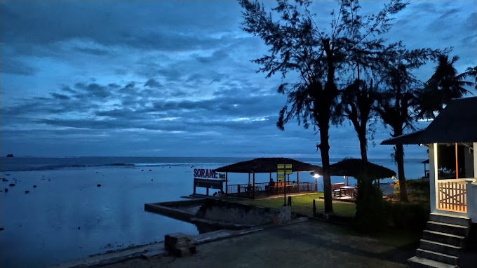

|
Lompat Batu Nias |
Salah satu yang sangat ikonik dari Pulau Nias adalah lompat batu. Saking unik dan otentiknya tradisi lompat batu, bahkan pernah menjadi background dari uang kertas di awal tahun 2000-an. Dinamakan sebagai tradisi Fahombo atau ‘Lompat Batu’, Anda akan disuguhkan aksi pemuda-pemuda lokal yang melompati batu setinggi dua meter. Dulunya tradisi ini melambangkan ujian kedewasaan fisik bagi remaja-remaja di Nias. |
Desa Bawomataluo, Nias Selatan |
|  |
Pantai Sorake, Nias Selatan |
Masih di Kabupaten Nias Selatan, Anda bisa pergi ke Pantai Sorake yang lokasinya tidak jauh dari Desa Bawomataluo, hanya sekitar 30 menit. Di sini Anda bisa menikmati garis pantai yang sangat eksotis, bahkan disebut jika cuaca cukup baik, Anda bisa melihat batas garis Samudera Hindia dari bibir pantai.Apa yang paling populer dari Pantai Sorake adalah gulungan ombaknya yang bisa setinggi 10-12 meter. Bahkan Pantai Sorake sendiri disebut sebagai pantai dengan arus ombak terbaik nomor dua di dunia setelah Pulau Hawaii di Amerika Serikat. Tidak heran, banyak turis mancanegara yang datang ke sini menjajal keganasan ombaknya.
Pemerintah daerah sendiri juga secara rutin menyelenggarakan event internasional seperti Nias Pro dan Nisel Open Surfing Contest setiap tahunnya. Jadi, pastikan Anda datang di hari event agar bisa menyaksikan peselancar internasional beraksi di atas ombak Pantai Sorake yang menawan
|
Nias Selatan |
 |
Pantai Gawu Soyo( Pantai pasir merah) |
Nama pantai ini adalah Gawu Sayo yang berarti kemerahan dalam Bahasa Indonesia. Anda bisa melihat warna pasir merahnya sepanjang garis pantai, kurang lebih 1 kilometer. Dengan persinggungan air laut yang kebiruan, maka akan menghasilkan pemandangan yang sangat eksotis. Akses menuju lokasi ini juga terbilang tidak jauh dari pusat kota, hanya sekitar 80 kilometer dari Kota Gunung Sitoli.
Konon, ada cerita rakyat dibalik eksotisme pasir kemerahan ini. Legenda lokal menyebut bahwa pasir merah itu adalah bekas pertumpahan darah seekor ular siluman yang ditumpas oleh seorang pemuda sakti bernama Laowomaru. Tempat ini juga tergolong sepi dan belum mendapatkan ekspos yang memadai dari media, sehingga sangat cocok untuk Anda yang mendambakan objek wisata yang hening. |
Nias Utara |